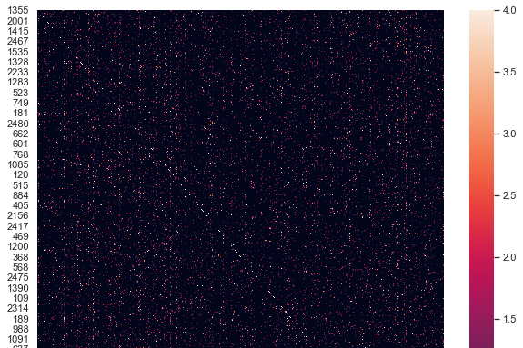

Research > Interpretable Machine Learning for Causal Inference
Interpretable Machine Learning for Causal Inference
Almost Matching Exactly Lab
May 2020 - present

Figure 1: Heat map visualization of matched group matrix generated by MALTS.
(source)
Background and Research Goals
Machine learning models are becoming increasingly
relevant for decision-making in high stakes domains, such as
health care and criminal justice. In order to maintain trust
in the model and to avoid potentially disastrous consequences,
it is very important to design human-interpretable machine learning
tools. For clarity, an interpretable model is one where the underlying
logic and reasoning can be understood by humans. In contrast,
a "black box" model is one which is either far too complicated for a
human to discern or one which is proprietary, so users are
forbidden from understanding the mechanisms under the hood.
Headed by Dr. Sudeepa Roy, Dr. Cynthia Rudin, and Dr. Alexander Volfovsky,
the Almost Matching Exactly Lab
at Duke University focuses on developing and applying interpretable machine learning algorithms
for causal inference. My individual contributions to the lab deal primarily
with the DAME-FLAME Python Package,
the creation and maintenance of the AME website, and the interactive demo created for the
Conference on Neural Information Processing Systems (NeurIPS).